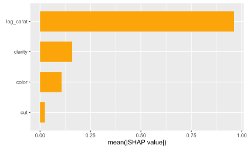
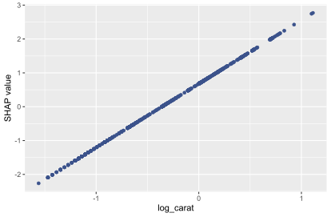
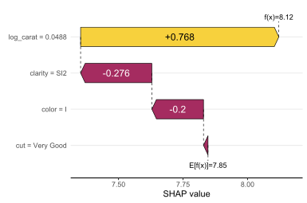
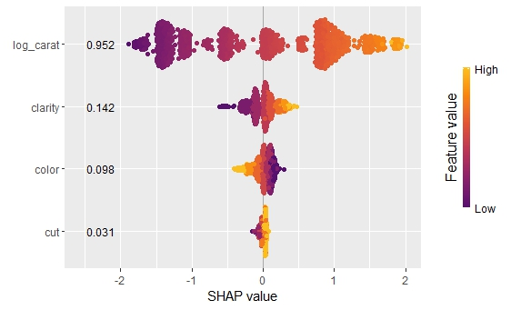
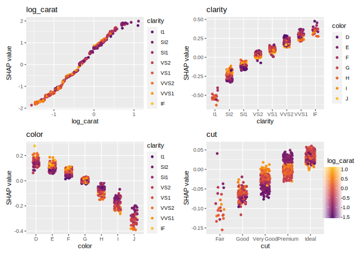
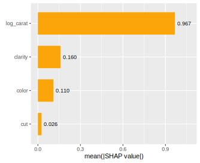
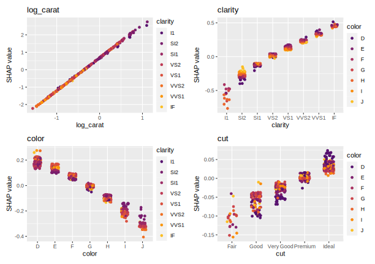

Overview
This package offers an efficient implementation of Kernel SHAP, see [1] and [2]. For up to p = 8 features, the resulting Kernel SHAP values are exact regarding the selected background data. For larger p, an almost exact hybrid algorithm involving iterative sampling is used by default.
The typical workflow to explain any model object:
-
Sample rows to explain: Sample 500 to 2000 rows
Xto be explained. If the training dataset is small, simply use the full training data for this purpose.Xshould only contain feature columns. -
Select background data: Kernel SHAP requires a representative background dataset
bg_Xto calculate marginal means. For this purpose, set aside 50 to 500 rows from the training data. If the training data is small, use the full training data. In cases with a natural “off” value (like MNIST digits), this can also be a single row with all values set to the off value. -
Crunch: Use
kernelshap(object, X, bg_X, ...)to calculate SHAP values. Runtime is proportional tonrow(X), while memory consumption scales linearly innrow(bg_X). - Analyze: Use {shapviz} to visualize the result.
Remarks
- Multivariate predictions are handled at no additional computational cost.
- By changing the defaults, the iterative pure sampling approach in [2] can be enforced.
- Case weights are supported via the argument
bg_w.
Installation
# From CRAN
install.packages("kernelshap")
# Or the development version:
devtools::install_github("ModelOriented/kernelshap")Usage
Let’s model diamonds prices!
Linear regression
library(ggplot2)
library(kernelshap)
library(shapviz)
diamonds <- transform(
diamonds,
log_price = log(price),
log_carat = log(carat)
)
fit_lm <- lm(log_price ~ log_carat + clarity + color + cut, data = diamonds)
# 1) Sample rows to be explained
set.seed(10)
xvars <- c("log_carat", "clarity", "color", "cut")
X <- diamonds[sample(nrow(diamonds), 1000), xvars]
# 2) Select background data
bg_X <- diamonds[sample(nrow(diamonds), 200), ]
# 3) Crunch SHAP values for all 1000 rows of X (~6 seconds)
system.time(
shap_lm <- kernelshap(fit_lm, X, bg_X = bg_X)
)
shap_lm
# SHAP values of first 2 observations:
# carat clarity color cut
# [1,] 1.2692479 0.1081900 -0.07847065 0.004630899
# [2,] -0.4499226 -0.1111329 0.11832292 0.026503850
# 4) Analyze
sv_lm <- shapviz(shap_lm)
sv_importance(sv_lm)
sv_dependence(sv_lm, "log_carat", color_var = NULL)

We can also explain a specific prediction instead of the full model:
single_row <- diamonds[5000, xvars]
fit_lm |>
kernelshap(single_row, bg_X = bg_X) |>
shapviz() |>
sv_waterfall()
Random forest
We can use the same X and bg_X to inspect other models:
library(ranger)
fit_rf <- ranger(
log_price ~ log_carat + clarity + color + cut,
data = diamonds,
num.trees = 20,
seed = 20
)
shap_rf <- kernelshap(fit_rf, X, bg_X = bg_X)
shap_rf
# SHAP values of first 2 observations:
# log_carat clarity color cut
# [1,] 1.1987785 0.09578879 -0.1397765 0.002761832
# [2,] -0.4969451 -0.12006207 0.1050928 0.029680717
sv_rf <- shapviz(shap_rf)
sv_importance(sv_rf, kind = "bee", show_numbers = TRUE)
sv_dependence(sv_rf, "log_carat")

Deep neural net
Or a deep neural net (results not fully reproducible):
library(keras)
nn <- keras_model_sequential()
nn |>
layer_dense(units = 30, activation = "relu", input_shape = 4) |>
layer_dense(units = 15, activation = "relu") |>
layer_dense(units = 1)
nn |>
compile(optimizer = optimizer_adam(0.1), loss = "mse")
cb <- list(
callback_early_stopping(patience = 20),
callback_reduce_lr_on_plateau(patience = 5)
)
nn |>
fit(
x = data.matrix(diamonds[xvars]),
y = diamonds$log_price,
epochs = 100,
batch_size = 400,
validation_split = 0.2,
callbacks = cb
)
pred_fun <- function(mod, X) predict(mod, data.matrix(X), batch_size = 10000)
shap_nn <- kernelshap(nn, X, bg_X = bg_X, pred_fun = pred_fun)
sv_nn <- shapviz(shap_nn)
sv_importance(sv_nn, show_numbers = TRUE)
sv_dependence(sv_nn, "clarity")

Parallel computing
Parallel computing is supported via foreach, at the price of losing the progress bar. Note that this does not work with Keras models (and some others).
Example: Linear regression continued
library(doFuture)
# Set up parallel backend
registerDoFuture()
plan(multisession, workers = 4) # Windows
# plan(multicore, workers = 4) # Linux, macOS, Solaris
# ~3 seconds on second run
system.time(
s <- kernelshap(fit_lm, X, bg_X = bg_X, parallel = TRUE)
)Example: Parallel GAM
On Windows, sometimes not all packages or global objects are passed to the parallel sessions. In this case, the necessary instructions to foreach can be specified through a named list via parallel_args, see the following example:
library(mgcv)
fit_gam <- gam(log_price ~ s(log_carat) + clarity + color + cut, data = diamonds)
system.time(
shap_gam <- kernelshap(
fit_gam,
X,
bg_X = bg_X,
parallel = TRUE,
parallel_args = list(.packages = "mgcv")
)
)
shap_gam
# SHAP values of first 2 observations:
# log_carat clarity color cut
# [1,] 1.2714988 0.1115546 -0.08454955 0.003220451
# [2,] -0.5153642 -0.1080045 0.11967804 0.031341595Meta-learning packages
Here, we provide some working examples for “tidymodels”, “caret”, and “mlr3”.
tidymodels
library(tidymodels)
library(kernelshap)
iris_recipe <- iris %>%
recipe(Sepal.Length ~ .)
reg <- linear_reg() %>%
set_engine("lm")
iris_wf <- workflow() %>%
add_recipe(iris_recipe) %>%
add_model(reg)
fit <- iris_wf %>%
fit(iris)
ks <- kernelshap(fit, iris[, -1], bg_X = iris)
kscaret
library(caret)
library(kernelshap)
library(shapviz)
fit <- train(
Sepal.Length ~ .,
data = iris,
method = "lm",
tuneGrid = data.frame(intercept = TRUE),
trControl = trainControl(method = "none")
)
s <- kernelshap(fit, iris[, -1], predict, bg_X = iris)
sv <- shapviz(s)
sv_waterfall(sv, 1)mlr3
library(mlr3)
library(mlr3learners)
library(kernelshap)
library(shapviz)
mlr_tasks$get("iris")
tsk("iris")
task_iris <- TaskRegr$new(id = "iris", backend = iris, target = "Sepal.Length")
fit_lm <- lrn("regr.lm")
fit_lm$train(task_iris)
s <- kernelshap(fit_lm, iris[-1], bg_X = iris)
sv <- shapviz(s)
sv_dependence(sv, "Species")References
[1] Scott M. Lundberg and Su-In Lee. A Unified Approach to Interpreting Model Predictions. Advances in Neural Information Processing Systems 30, 2017.
[2] Ian Covert and Su-In Lee. Improving KernelSHAP: Practical Shapley Value Estimation Using Linear Regression. Proceedings of The 24th International Conference on Artificial Intelligence and Statistics, PMLR 130:3457-3465, 2021.